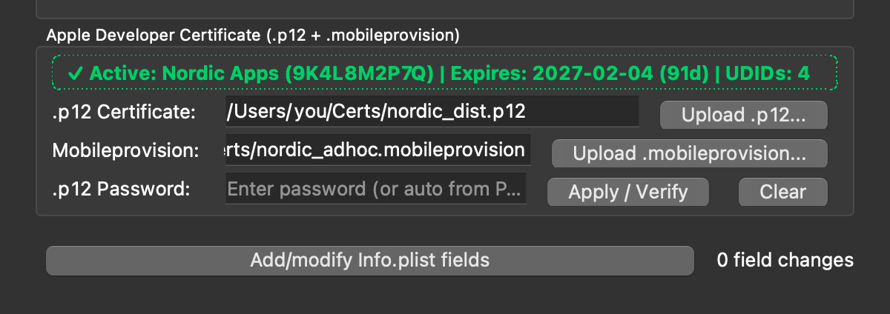

Drag & drop directly inside Advanced Options
Drop your .p12 and .mobileprovision individually, together, or as a folder. The panel expands and collapses in lockstep with Advanced Options so the Start button is never clipped.
